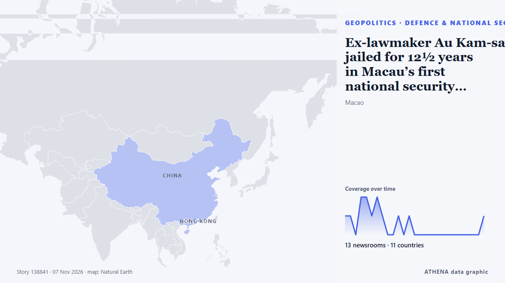

Ex-lawmaker Au Kam-san jailed for 12½ years in Macau’s first national security trial

Former Macau opposition lawmaker Au Kam-san has been convicted on five of seven charges in the city’s first national security trial, with the court handing down a 12½-year prison sentence following… from South China Morning Post
What changed 11 new reports from 11 outlets in the last 24 hours.
See the sources ›Evidence: Limited
Reported independently by 13 outlets in 11 countries since 6 Nov, first by South China Morning Post; coverage is fading. ATHENA rates the risk low (1.6/10), driven mainly by the severity of the harm described and its geographic and sector reach. Confidence is 64% (moderate), with 13 independent outlets corroborating it and an average source reliability of 76%. Outlets by country: Turkey (2), United States (2), Hong Kong (1). Coverage: 6 Nov to 7 Nov, 27 hours.
What changed: 11 new reports from 11 outlets in the 24 hours to 7 Nov.
First reported as: 12½ years’ jail for ex-Macau lawmaker Au Kam-san in city’s first national security trial
AutomatedSelected, grouped and scored by ATHENA's published method from 13 independent outlets. The headline is the outlet's own; ATHENA's sentences follow fixed patterns - no generative AI writes them. How it works →
How to read this page
- What you are reading
- 13 outlets in 11 countries reported this event. The reports below are listed in the order they appeared; each headline opens the original article. ATHENA writes none of the reports.
- Our reading
- For the record — The reports describe a completed, domestic, commercial or personal matter. We list it so you can see who reported it and when. We are not tracking a risk of wider conflict here.
- How much evidence
- Limited Treat this page as an early report.
After repeats, off-topic items and stale reports are removed, 8 of the 13 listed reports are counted; 100% of the headlines match the event.
- What this does not mean
- ATHENA measures how an event is reported, not whether it is true. This is not a forecast, a judgement on who is right, or advice.
- What would change it
- Reports from other independent outlets showing a different development, or a firm confirmation or denial from an official source.
Reading R2 · refreshed with every update of this page. ATHENA has not yet published a track record for these readings; when it does, it will be linked here.
At a glance
Selected, scored and written by ATHENA's published methodology. No editor intervenes in individual events. How this is produced ›
| 06 Nov 03:08 UTC | 1 |
|---|---|
| 06 Nov 04:08 UTC | 1 |
| 06 Nov 05:08 UTC | 0 |
| 06 Nov 06:08 UTC | 2 |
| 06 Nov 07:08 UTC | 2 |
| 06 Nov 08:08 UTC | 1 |
| 06 Nov 09:08 UTC | 2 |
| 06 Nov 10:08 UTC | 1 |
| 06 Nov 11:08 UTC | 0 |
| 06 Nov 12:08 UTC | 0 |
| 06 Nov 13:08 UTC | 1 |
| 06 Nov 14:08 UTC | 0 |
| 06 Nov 15:08 UTC | 1 |
| 06 Nov 16:08 UTC | 0 |
| 06 Nov 17:08 UTC | 0 |
| 06 Nov 18:08 UTC | 0 |
| 06 Nov 19:08 UTC | 0 |
| 06 Nov 20:08 UTC | 0 |
| 06 Nov 21:08 UTC | 0 |
| 06 Nov 22:08 UTC | 0 |
| 06 Nov 23:08 UTC | 0 |
| 07 Nov 00:08 UTC | 0 |
| 07 Nov 01:08 UTC | 0 |
| 07 Nov 02:08 UTC | 0 |
| 07 Nov 03:08 UTC | 0 |
| 07 Nov 04:08 UTC | 0 |
| 07 Nov 05:08 UTC | 1 |
Why these numbers
Importance
How widely and how prominently the story is reported.
Risk
What the reports describe, scored for possible harm. It is not a forecast.
Confidence
How well independent outlets support the story.
Shown as 64% (calculated 86%): the evidence reading is Limited, so confidence is held at moderate.
The reporting — who reported it, and when
headline as published · opens the original- South China Morning Post · Hong KongEx-lawmaker Au Kam-san jailed for 12½ years in Macau’s first national security trial
- DW English · GermanyEx-lawmaker jailed in Macau's first national security trial
- TRT World · TurkeyChina's Macau jails ex-lawmaker in first national security trial
- BBC News · United KingdomMacau jails pro-democracy campaigner in city's first national security case
- Mainichi (English) · JapanFormer pro-democracy lawmaker sentenced to 12 1/2 years in Macao's 1st national security case
- ABC News (International) · United StatesFormer pro-democracy lawmaker sentenced to 12 1/2 years in Macao’s 1st national security case
- CNA (Channel NewsAsia) · SingaporeMacau ex-lawmaker sentenced to 12.5 years in prison in city's first national security trial
- Anadolu Agency (English) · TurkeyMacao sentences former lawmaker to over 12 years in prison in 1st national security case
- Le Monde (English) · FranceChina's Macau jails ex-lawmaker in first national security trial
- Daily Maverick · South AfricaMacau ex-lawmaker sentenced to 12.5 years in prison in city’s first national security trial
- NPR · United StatesEx-lawmaker gets 12.5 years in Macao's first national security case
- Arab News · Saudi ArabiaChina’s Macau jails ex-lawmaker in first national security trial
- CGTN (China) · ChinaEx-lawmaker jailed 12.5 years in Macao's first national security case